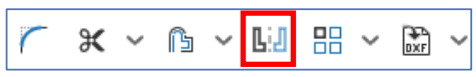

Estas herramientas permiten dar relaciones a la geometría 2D que no se pueden dar a través de las dimensiones, como las relaciones de tangencia, coincidencia, paralelismo...
Son necesarios para definir correctamente nuestro Sketch .
Antes de dar la relación es necesario tener los elementos seleccionados.
Coincidencia
Esta primera relación es de coincidencia , que puede darse entre un punto y una recta, un punto y un punto, un punto y una curva, una recta y una recta...
Hay situaciones en las que no se puede utilizar esta relación, en casos lógicos en los que es geométricamente imposible que dos geometrías coincidan.
Concentricidad

Esta relación permite la concentricidad , que normalmente será entre círculos y arcos.
La concentricidad no se puede hacer con figuras que no tienen centro.
Paralelismo
Esta relación es la de paralelismo con la que podemos hacer varias rectas paralelas entre sí.
Tangencia
Esta herramienta muestra la relación de tangencia ya puede ser entre recta y curva, recta y circunferencia, circunferencia y circunferencia...
En muchos casos es necesario alargar la recta a la que se se produzca la tangente, porque aunque sea tangente no quiere decir que sea coincidente.
Horizontal
Esta herramienta hace una línea horizontal , es decir paralela a la línea de suelo del Croquis .
Vertical
Esta herramienta hace una línea vertical , es decir, perpendicular a la línea de tierra del Croquis
Perpendicular
Esta herramienta hace dos líneas perpendiculares entre sí.
Mismo largo
Esta relación hace que dos líneas o arcos tengan la misma longitud
Punto medio
Esta relación hace que un punto sea el punto medio de una línea recta o curva.
Redondear
Nos servirá para redondear dos líneas. Al hacer clic en la herramienta, debemos seleccionar las líneas sobre las cuales se hará el redondeo y, automáticamente, se crea un redondeo en las esquinas equivalente al arco que une sus líneas. Obviamente, podemos ajustar su medida.
Recortar
Esta herramienta tiene tres formas de funcionamiento: Trim o recortar, Extend o extender y Slipt o división
A veces, en nuestro dibujo, nos encontramos con que nos hemos pasado al pintar nuestras líneas y necesitamos hacer desaparecer una parte del mismo. Simplemente, seleccionamos la herramienta recortar (Trim) y a continuación, seleccionamos la línea que queremos hacer desaparecer
Otras veces, queremos hacer lo contrario. Es decir, extender o alargar la línea. Para ello, seleccionamos la herramienta en la opción Extend para, finalmente, ir a la línea y poder extenderla. La línea seleccionada será reflejada manteniendo la misma dirección
La última opción se llama Split y nos servirá para dividir una línea en 2 partes. Sólo debemos decirle en que punto se divide la línea. De esa forma, esa linea se convierte en dos y cada parte puede ser manipulado de forma independiente
Offset
Esta herramienta tiene dos formas de funcionamiento: Offset y Slot
La opción Offset nos sirve para crear una copia de la figura original a una distancia que nosotros podremos fijar. Seleccionamos la imagen y creamos un offset, que puede ser interior o hacia adentro o exterior y hacia a fuera.
La opción Slot nos crea un contorno redondeado por los lados que siga la estructura de una línea. Como ejemplo, en el cuadrado anterior se han seleccionado las 4 líneas del contorno exterior con la herramienta Slot.
Espejo

Esta herramienta permite hacer copias de los diseños en cualquiera de los ejes.
Obviamente, esta herramienta nos permitirá acelerar nuestro trabajo de diseño
Matriz
Supongamos que queramos repetir una figura A, un número determinado de veces. En este caso nos interesará crear patrones lineales, circulares o manipular el diseño cambiando su altura y distancia de separación